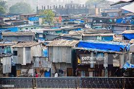

Kancharapalem

Kancharapalem is a slum area located in the city of Visakhapatnam in the Indian state of Andhra Pradesh. Here are some points about Kancharapalem slum. Kancharapalem is home to approximately 20,000 people, most of whom are daily wage laborers and belong to lower socio-economic groups.Due to the lack of sanitation facilities and poor living conditions, the slum residents are prone to health issues such as waterborne diseases, respiratory illnesses, and malnutrition.
Major Problems
- Unemployment: A large number of residents in Kancharapalem are daily wage laborers who face uncertainty and low wages, leading to financial instability.
- Crime: The slum is known for its high crime rates, with incidents of theft, burglary, and violence being reported frequently.
- Inadequate healthcare: Medical facilities in Jalaripeta are often limited and of poor quality, which can limit access to healthcare for residents.
- Limited access to clean water: Access to clean and safe drinking water is limited, and residents often have to depend on contaminated water sources.
- Poor sanitation: Lack of proper sanitation facilities such as toilets and sewage systems lead to the spread of diseases and unhygienic living conditions.